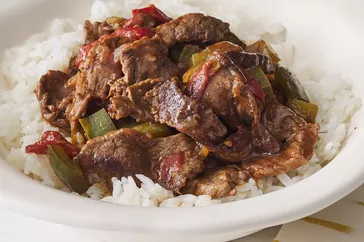

Rice Recipes

Rice Recipies
In a large saucepan, mix the water, rice, potatoes, tomato paste,
and tomato sauce. Stirring constantly, bring to a boil. Reduce heat
to medium, and stir in basil, sugar, salt, and bay leaves. Cook about 1
5 minutes, stirring often, until potatoes and rice are tender but firm.
Ingredients
- 4 cups water
- 2 cups uncooked white rice
- 2 unpeeled potatoes, diced
- 1 (12 ounce) can tomato paste
Directions
-
In a large saucepan, mix the water, rice, potatoes,
tomato paste, and tomato sauce. Stirring constantly,
bring to a boil. Reduce heat to medium, and stir
in basil, sugar, salt, and bay leaves. Cook about
15 minutes, stirring often, until potatoes and
rice are tender but firm.
- Mix spinach, stewed tomatoes, and lemon juice
into the saucepan. Reduce heat, and simmer
15 minutes, or until rice has finished cooking
and the mixture has thickened.